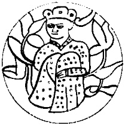

Oğullarımı, kızlarımı, tüm ailemi ve ileri gelen adamlarımı toplayıp bu edeceğim işi anlattığımda, hepsi delirdiğimi düşündü. Salur’a bir şey yapmak için kendimizi ateşe atıyorum sandılar. Gözlerimi kin bürüdüğü için çıldırdım sandılar. Biraz karışıklık, biraz mırın kırın bekliyordum ama bu kadarına pek hazır değildim doğrusu. Oysa ben açık, anlaşılır kolay bir şey önermiştim. Diyordum ki,
“Artık çağıdır, din değiştirelim! İnananlarına Müselman veya söyleyişe göre Büsürman dedikleri dine girelim! İslam olalım.”
Herkesten önce kendi çocuklarım öyle bir saldırdılar ki üzerime, ağzım açık kaldı. Arsılan’dan neredeyse on beş yaş küçük olan kızım Lior Bibi Muncuk yırtıcı bir bozkır yaratığı gibi atıldı:
“Baba seni dolu bilirdik, herkes gibi Maşiah derdik, boş musun? Kof er misin Han'ım Baha? Bu ne sözdür canım baba?” diyerek hem bir söz oyunuyla bu işte ne kadar usta olduğunu ortaya koydu hem de uğuş arası ok atışlarını başlattı.
Henüz yirmi yaşında olan en büyük kızımın, hem Selcük'e hem de bana benzeyen yüzüne baktım. Ağzımı açacaktım ki, küçük oğullarım Yunus ile Yusuf birbirleriyle didişe didişe benim deli mi olduğumu sordular. Ufacık Mikail, anlamını bilmese bile “Bre kavat sen delirdin mi?” diyordu. Diğer kızlarım Hulda Eze Yincü ile Raşel Aba Çiçek, ablalarından daha yumuşak, ama aynı anlama gelecek sözler söylediler. Doğrudan bana bir şey demediler ama Tanrı’dan dininde durana alkış, dininden dönene kargış dilediler.
Aralarında çok yaş olmasına karşın, ikisini bir tutma kaygımdan dolayı “büyük oğullarım” dediğim Arsılan İsrail ve Musa İnanç’a döndüm. Otuz beş yaşında, neredeyse tüm yaşamı vuruşmalarda geçen İsrail susuyordu. Bayındır Han’ın oğlu olduğunu hiç bilmeyen oğlum Musa inanç, günün ilk sorusunu sordu:
“Bu geliş neredendir? Bu inen sel hangi dağdandır? Bu esen yel hangi beldendir? Güneşi soğuk kuzeyden midir? Keçe kepenek atar ısıtırız güneşi Han Baba! Yağmuru sıcak güneyden midir? Özümüz yel olur soğuturuz yağmuru Han Baba! Nedendir bu dediğin, nedendir Han Baba?”
Bak buna hazırdım. Uzun uzun açıkladım. Doğru, arslandık, kaplandık ama arslana da kaplana da yatak gerekti. Cend denen kentin halkı çoğunlukla Müslümandı. Biz de çok ilerde yetmiş Cend’e muhtaç olmak istemiyorsak bile bugün tek bir Cend’e bayağıca muhtaçtık. Biz burada bir gelecek istiyorsak Müslüman olmalı, sırtımızı Müslümanlara dayamalı, arkamızı sağlama almalı, sonra geri dönüp yeni dinimiz uğruna Yengikent yabgusu Salur Kazan’a kılıç çalmalıydık. Öyle bir satır atmalıydık ki, denizde balık, gökte bulut üşenmeli, yazıda kutanlar kan kaşanmalıydı.
Bir Müslüman denizinde birazı Musevi, birazı Şaman, birazı Hıristiyan bir azınlık olarak daha ne kadar kalabilirdik? Eğer biz Müslüman olmazsak kimse bize katılmayacağı gibi, ta Hazar'dan beri birlikte olduğumuz kendi uysal Müslümanlarımız da içine girdiğimiz büyük Müslüman toplumu içinde eriyecek, sayımız iyice düşecekti. Her yandaki Şaman Türklerin kitleler halinde Müslüman olduğunu hepsi biliyordu, değil mi? Şu geçtiğimiz yıllarda Doğu Hakanlığında aynı gün Müslüman olan 201.092 Karluk’un öyküsünü duymuşlardı, duymamışlar mıydı? Peki bizden başka, Yahudi dinine geçmiş bir Şaman Türk bölüğü görmüşler miydi hiç? Demek ki bizim kendi Şamancılarımız da Müslüman olacaklardı. Kaçınılmazdı. Şimdiye kadar bizimle karışık yaşayıp hâlâ atalarının dininde durmalarına bakılırsa, bu saatten sonra Musa’nın dinine geçmeleri pek olası değildi.
O ana dek hiç söze karışmadan oturan Selcük birden hıçkıra hıçkıra ağlamaya başladı.
“Tengere Kağan! Bu Güç Kulesi yıllarının senin üzerinde sandığımdan da çok etkisi olmuş! Ne demek bizim Yahudi dinine geçmemiz? Kağan sen usundan mı oldun? Biz ne zaman Şamancı olduk ki? Biz seçilmişler değil miyiz? Tanrı ile anlaşmamız yok mu? Yahudi değil miyiz biz?”
Selcük’ün ak saçlarına, ince yüzüne sevgiyle baktım. Bütün öğrendiklerini, koca bir geçmişi silemez, kalbini kıramaz, sorularını yanıtlandıramazdım. Gülümseyerek:
“Peki, tartışmalı yerleri geçelim Selcük. Belki de ben yanılıyorumdur. Tutalım ki hep Yahudi’ydik. Diğer dediklerime ne diyorsun? Her savaşta, Hazar’dan gelen Aktürklerin sayısı azalıyor. Daha kaç yıl gider bu?”
“Haa... Bu olabilir... Ne demek istediğini anlıyor gibiyim Kağan. Sizin Uygurlar, Kitanlar arasında yaptığınızı yapacağız! Ama Kağan, durum sandığın kadar kötü olmayabilir. Hazar’dan gelen Aktürklerin sayısı ne kadar azalırsa azalsın, her zaman budunu yönetecek bir sayı kalacaktır. Budun içinde budun gibiyiz. Ayrıca ordumuz güçlü. Oğuz’dan her gün gelip katılanlar oluyor. Onlar da yabancı değil, doğru dindeki kardeşlerimiz aslında. Küçük, hızlandırılmış bir eğitimle adam ederiz. Böylece Müslüman bir çevrede bile tutunabiliriz.”
“Peki Selcük, gelenlerin doğru dinde olduğunu söylüyorsun da... ne kadarı dinini biliyordur sence?”
“?”
“Ben söyleyeyim! Hemen hiçbiri! Adlarında Ezekiel, Yehoram, Zedekiyah, Ahab var diye ne olacak? Bu ne demek biliyor musunuz? Biz Müslüman olmazsak, olacak başkaları var. Sözü geldi, bana ulaştı. Tat dervişler aralarında dolaşmaya başlamış, Oğuz şimdiden bu kişilere ‘baba, dede’ diyormuş. Oğuz’u yitirmeye, başkasına bırakmaya hazır mısınız?”
Bu son söylediklerim biraz akıllarını bulandırdı. Düşünmeye başladılar. Belki de “he” diyeceklerdi. Yeniden Yalım Çor olası, Tanrı’dan bulası, acuna kazık kakıp oturan, o tez elden Tamuyu boylayası Yaşıl Kır uzun sopasına dayanarak ayağa kalktı.
“Kağan! Doğru dinden çıkmamızı nasıl söylersin? Atan deden hangi çağda din değiştirdi ki sen değiştiresin? Biz seçilmişleriz. Atanmışlardan değiliz. Bize söz verilen ülkemize, Anadolu’ya, Tanrı’nın ikinci İsrail’ine gidiyoruz! Bir yerde doğru söylersin. Biz doğru dinimizi yeterince bilmiyoruz. Kağanlığın başravı olarak ben bile yazılı Tora’yı yalnızca bir kez elimde tuttum! Ama öğreniriz, öğretiriz Kağan!”
Buraya kadar kulaktan dolma, ipe sapa gelmez şeyleri dilenci tekerlemesi gibi sıralayıp duruyordu. Ben de hoş görüp gülüyordum. Sonra bir soluklandı sesi soluğu kesilesi. Yaşıl Kır’ın kedi olalı sıçan tutacağı tutmuştu. O güne denk geldi. Damdan düşer gibi soruverdi:
“Hem sonra Müslümanlığı biliyor muyuz ki ona geçelim? Sen biliyor musun?”
Bu kez de o haklıydı. Ben sonunda başarıp kral ya da kağan olmuş her Maşiah gibi, işin inanç yönünü göz ardı ediyor, yalnızca siyasi olarak bakıyordum meseleye. Sözün kısası, Hazar ülkesindeki azınlık Müslümanları gözlemlemekten gelen bilgimden öte Müslümanlık hakkında hiçbir şey bilmiyordum.
Yine de o günkü kengeş bizim için bir dönüm noktası oldu. Aldığımız önemli kararlar şöyleydi:
1. Başrav Yaşıl Kır ve ravlardan oluşturacağı bir çalışma bölüğü, Müslümanlığı araştıracak, öğrenecek, bize de anlatacaktı. Ondan sonra konu üzerinde konuşacaktık. Kuzeybatımızdaki yeni Müslüman Bulgarları saymazsak, Müslümanlar güneyimize düştüğü için, buna “Güney Çalışma Bölüğü” dedik. Kağan olarak bir yarlık çıkarıp tüm iş erlerinin bu çalışma bölüğünün işlerini kolaylaştırmasını buyurdum.
2. “Anadolu... Anadolu... İçim, bağrım şenle dolu!” diye tutturmak delilikti. İşte açıkça söylüyordum ki, ben o zaman “Urum” demedim, “bilmiyorum” dedim! Dolayısıyla İkinci İsrail’e sulanmadan önce birincisi ne durumda, araştırıp görecektik.
3. Seçeneklerimizi açık tutmakta sayısız yarar vardı. Hazar ve Urum dahil başka ülkelere de tüccar kılığında çaşıtlar gönderecek, durum nedir diye öğrenecektik.
Böyle düşündük. Kengeştik, danışık ettik. Karabudunun sözcüleri karaçu beyler de bu kararları onayladılar. En azından hiçbiri yabana konuşmadı. Sonra evlerimize dağıldık.